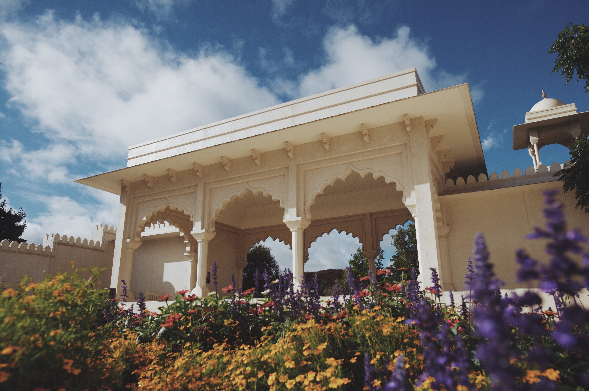

Hamilton Gardens is not just like any other garden, you will find a variety of botanical gardens such as the Chinese Scholar’s Garden, English Flower Garden, Japanese Garden of Contemplation, Modernist Garden, Italian Renaissance Garden, and the Indian Char Bagh Garden.
Each garden portrays a different story that everyone will surely love.
Opening hours: 7:00am - 7:30pm
Location: Hamilton Gardens, Hungerford Crescent, Hamilton 3216
Website: https://hamiltongardens.co.nz/
Cost:
- Optional Guided Tour Cost:
- $20 (age 15 - 99)
- $13 (age 6 - 14)
- Free (age 0 - 5)
